Photon Primitives C++ · Research
One framework. A vast family of estimators. A new way to see light.
Turn the connection between light and camera paths into geometry. The same construction gives us unbiased estimators, complementary sampling strategies, and structured images with a visual character of their own.
From publication to a working renderer. The 2019 Photon Surfaces paper establishes the unbiased framework. This page follows the estimator family into visual experiments, temporal slicing, and unpublished extensions—then shows them in RadianceLab.
What Are These Images?
These images are intermediate states generated by different photon primitive estimators — snapshots of how various rendering techniques within the photon primitive family traverse light-transport space. Images with stronger artifacts were generated using fewer samples, while those that begin to resemble a conventional rendered image used more samples; in practice, this simply means more time, more intermediate results, and an average closer to convergence.
Most images use scenes with participating media (e.g., fog or smoke), though some demonstrate that the approach also applies to scenes without volumetric effects. Many scenes are intentionally simple: some images show the same setup at different sample counts, while others compare different estimators applied to the same scene. The visual variety arises from the choice of photon primitive types and how they are combined.
Some images exhibit clear geometric structure, while others appear dominated by noise. Certain examples use transient (time-resolved) extensions, and others explore differential variants (experimental), where red and blue indicate positive and negative contributions, respectively.
For a matched scene, transport class and time gate, correctly weighted primal estimators target the same light-transport integral, even when their intermediate images look radically different. The gallery also includes experimental constructions and signed differential images: those can represent a derivative, rather than the final radiance itself.
A general framework for unbiased path connection
Two independently sampled subpaths almost never land at exactly the same point. A finite merging kernel makes them meet approximately. Photon surfaces instead integrate out the connection constraint: solve for the matching paths, then weight their contributions in the correct measure.
1 · Keep some choices
Sample a light subpath and a camera ray. Leave selected coordinates free.
2 · Solve the connection
Integrate three coordinates in total. A common case is two photon coordinates sweeping a sheet, intersected by the camera ray.
3 · Carry the measure
The Jacobian converts parameter density to crossing density. Include every supported branch, its sampling probability and transport weight.
The shape is the consequence of the sampling strategy. This is a recipe for deriving estimators, not a fixed catalog of meshes. The remaining coordinates are sampled with Monte Carlo.
The unbiased claim: exact connection, complete accounting
The delta connection is integrated analytically rather than widened into a finite-radius kernel. Correct Jacobians, visibility, branch coverage and PDFs preserve the target integral. Finding a tractable intersection and its weight is the work of designing each estimator; a general framework does not imply a cheap closed form for arbitrary geometry. Finite-kernel variants and practical truncations retain their own qualifications.
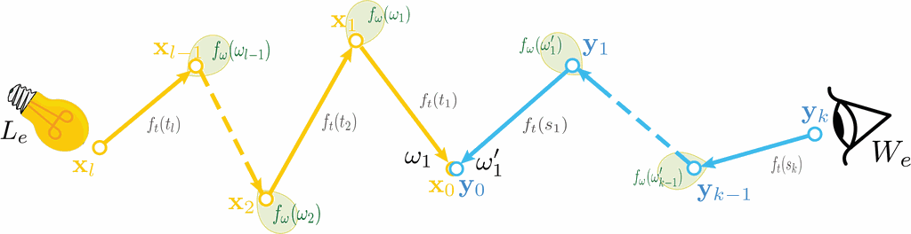
The meeting condition becomes an intersection problem.
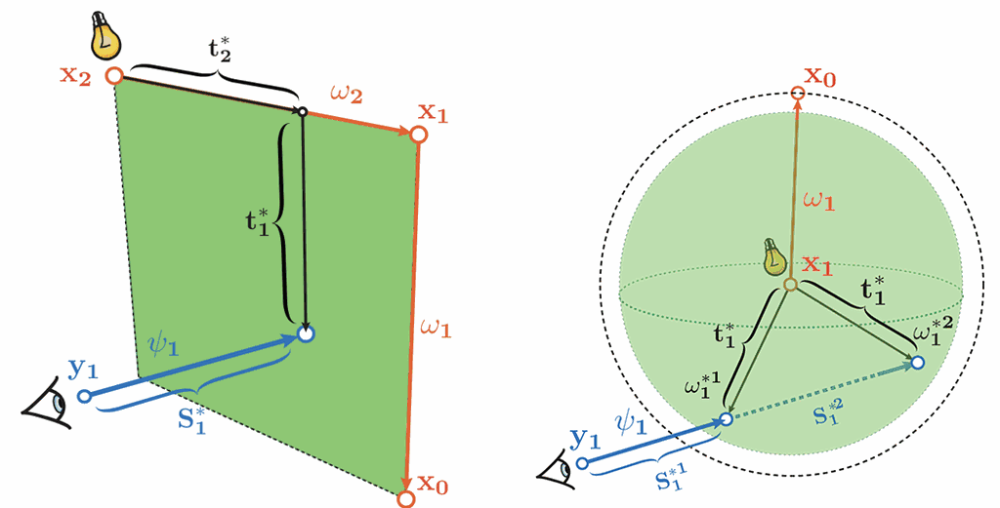
Paths sampled from both directions need to meet. Primitives give us a third option beyond direct connection or blurring. Here are two examples: By sweeping two distance terms, we form a plane; and by sweeping a whole directional term which is also 2D, we form a sphere. Above are the illustrations, and below are what the artifacts would look like.
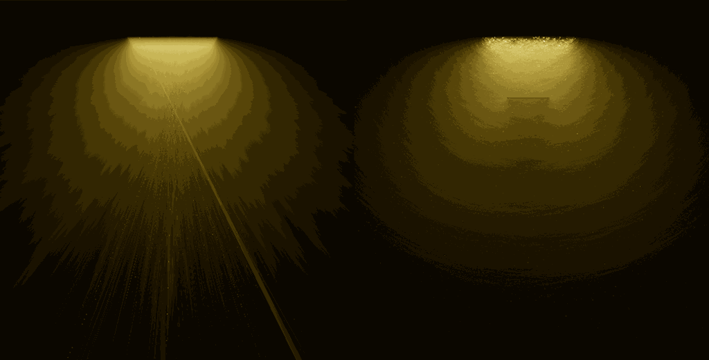
Primitive Types & Flexibility
Flexibility: Any Choice Can Become a Primitive
You can basically do anything you want, as long as you follow some simple rules: any choice made during path construction can be turned into a sampling domain, including the light source it self, or the aperture sample from the camera.
Here's an example of using all the sampling dimensions on the light source to form a primitive: this in practice will be placing copies of the light source everywhere (more specifically, placed on the sampled endpoints, and extra terms will appear).
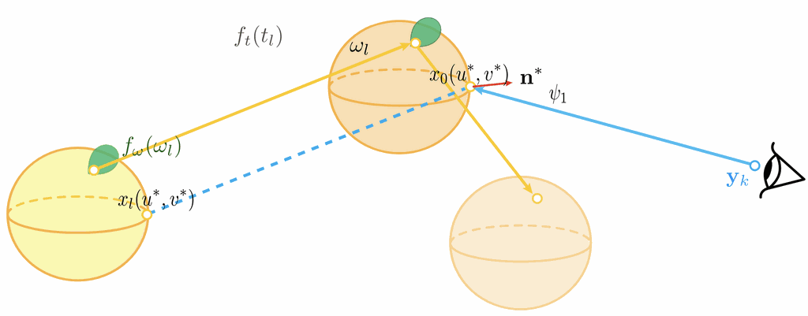
How well does this work? Well, that depends on the setup. One deciding factor is how large the light source is. Here's a quick comparison of this light source estimator (right) vs the photon sphere (left), with the same sample count:
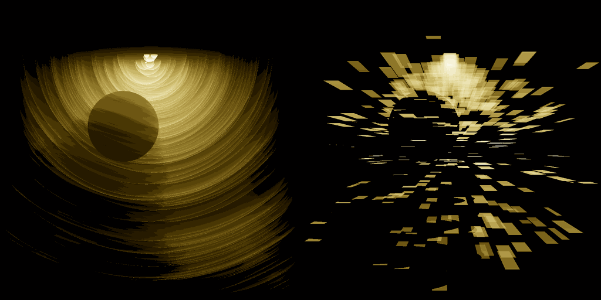
In this setup, since the light source is tiny, this works poorly.
This example above shows another benefit of the framework: geometric reasoning alone can already tell you a lot about how an estimator performs under specific situations.
Basic Geometric Primitives
Each primitive type captures different spatial coherence in light transport. What we use more commonly are primitives constructed using samples we get outside the lightsource.
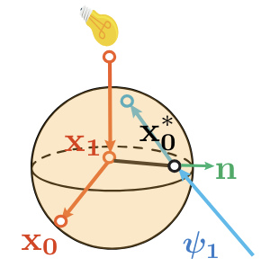
Sphere: two angles
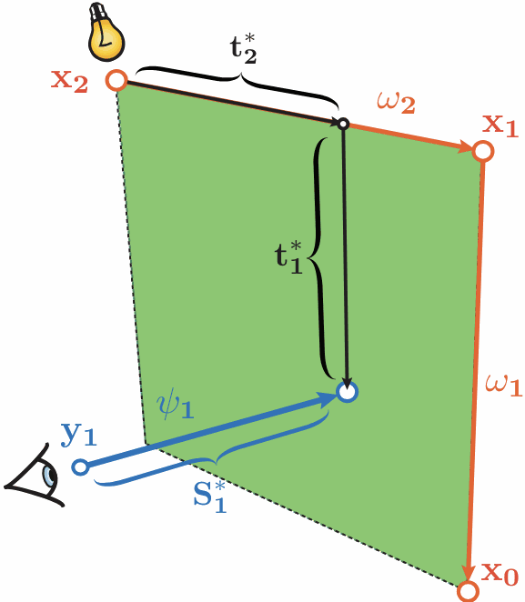
Plane: two distances

Cone: one angle, one distance
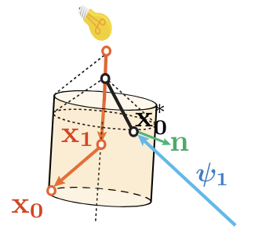
Cylinder: also one angle, one distance
Combining Primitives
Combine compatible strategies on a shared measure. Some families even allow a continuum of orientations to be integrated analytically; the example below combines arbitrarily oriented planes.
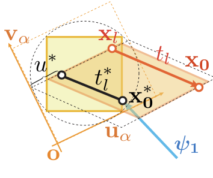
Arbitrarily oriented planes, analytically MISed—demonstrating the framework's compositional flexibility.
Higher Dimensional Primitives
As you might notice, even two dimensions of the same type can produce different primitives, and we're also not limited to two dimensions either: we can create 3D or even 4D and higher-dimensional primitives.
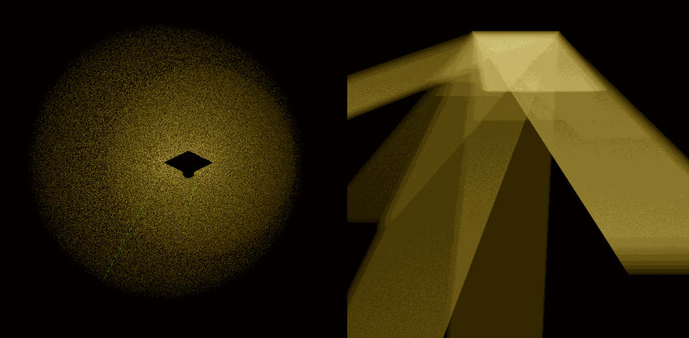
Examples of 3D primitives. Integrating more coordinates can reduce variance per sample, while increasing the cost of evaluating each primitive.
High-dimensional primitives are easy to construct, but the evaluation can become hard: since now the interesection is not on finite number of points anymore, instead, it's a line segment or more complex geometric shape, which would by itself require extra samples to evaluate stoahastically, since analytically integrating that is impractical.
A 2D-2D connection is non-trivial due to the same reason, and implementation wise, 2D+1D from the photon/sensor subpaths is the simplest.
Two Flavors, Two Aesthetics
Another important point is that any primitive can also be used in two ways: correlated and uncorrelated. The difference is in how the sampling peocedure works: do you store subpath and reuse them or not. With matching marginal distributions and weights, both can target the same expectation. Reuse changes covariance across pixels and work per sample, so their image-wide noise and variance per unit time need not match. But before they converge, the appearance will be completely different.
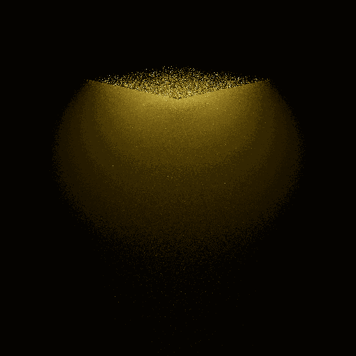
Each sample creates a fresh primitive. Discard, regenerate, repeat.
→ Subtle artifacts as higher noise in specific regions.
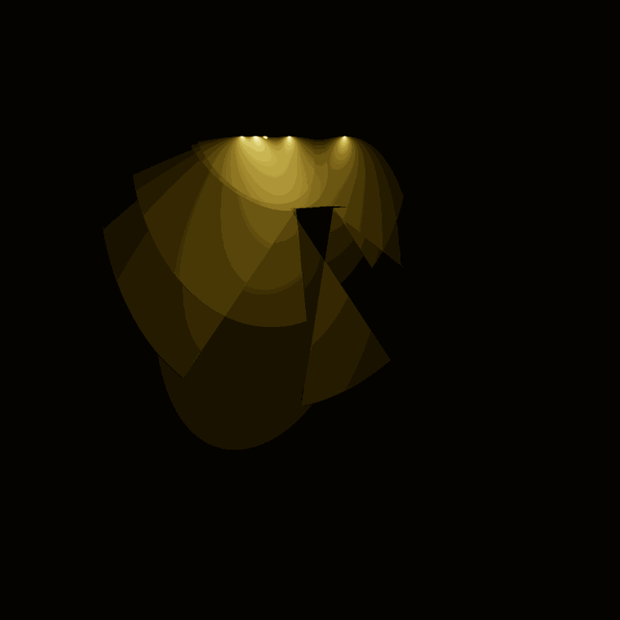
Reuse a shared batch across the image. Individual sample contributions become coherent forms, while sampling and weights still determine the estimate.
→ Bold artifacts: specular-looking primitives, coherent streaks, structured patterns.
Each creates its own aesthetic. A lot of correlated estimators are easily rasterizable.
Combination
To cover full light transport, we often need to combine multiple primitives in multiple ways: they can cover a wider range of paths, and from a sampling perspective, each primitive is a strategy — combining their decision processes can improve performance.
Intuitively, assuming we have 2 strategies to look for something, as long as one of them has a decent chance, using both together will have a decent chance.
To exploit their complementary strengths, use re-evaluation: ask how each strategy could have generated the same contributing path, then compare those densities on a shared measure. A fixed mixture can also be unbiased, but it does not adapt its weights to the path in this way.
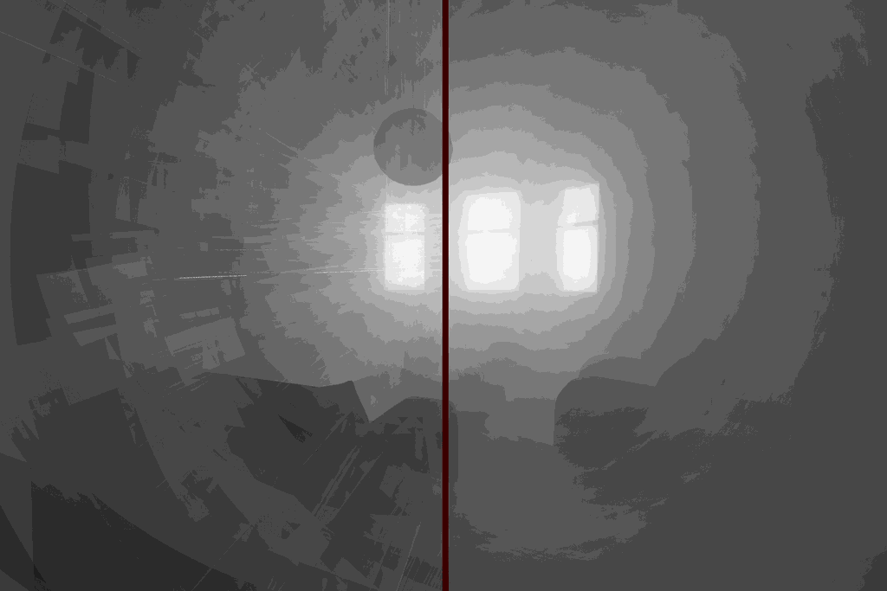
Different ways to combine primitive strategies. Some are more effective at reducing artifacts and speeding convergence.
MIS: Multiple Importance Sampling
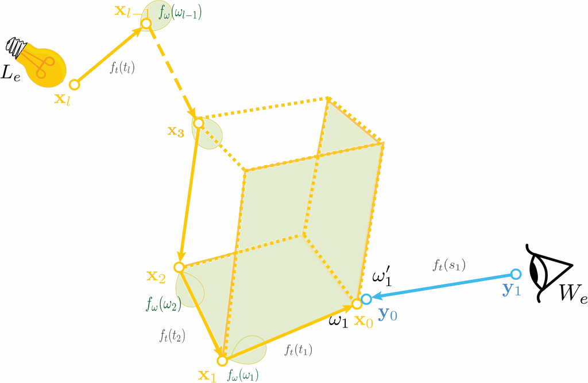
Multiple Importance Sampling (MIS) combining different primitive strategies for robust rendering.
Multiple Importance Sampling (MIS) is an important concept in rendering: from traditional perspective, it's a way to probabilistically combine multiple technique without introducing bias and will require knowing the sampling pdf from each strategy. In our framework, it has a different interpretation: as we already mentioned, "re-evaluating" the shading points and combine the evaluations given by each primitive.
For MIS to work well, we want the stragegies to complemenent each other, meaning if one is bad at specific type of paths, the other should be good at those paths. From the perspective of photon primitives, that translates to "the primitives that behaves the most differently when we change the viewing angle". For instance, a photon sphere will always have a bright rim, while a photon plane's brightness depends on its facing angle, so we have one that never changes and one that always changes as we change the direction of our samples segment, so this pair can be complementary when their supports and sampling densities are matched.
Published principle · native renderer measurements
Cone + disk + sphere: complementary strategies in action
A difficult crossing for one primitive can be an easy one for another. The directional trio evaluates compatible densities and lets MIS shift weight toward the better-conditioned member. RadianceLab implements the three together, so this is visible in an operating renderer.

Read the comparison: light size, cost and path support
The light-size rig uses a glass ball in fog, constant source power, a 217 × 140 film, five emitter sizes and eight independent batches per cell. The directional trio’s equal-time advantage over planes narrows to about 1.3× at 77°, within the reported timing uncertainty. The six-member mixture spends more per pass but reduces per-pass variance further.
These comparisons use a shared camera-leg convention; they are not rankings against every renderer. Conventional next-event estimation wins on this rig’s directly connectable scattering. Swept estimators become especially valuable when direct connection cannot form the desired path. The hourglass below is a concrete refractive example.
Analysis lab · geometry × probability × work
A bright rim is not a performance explanation—yet.
A fully shared photon sphere can leave a complete, persistent-looking rim; fresh samples turn that structure into scattered noise. Why can the first feel slower even when the statistics look similar? Separate the size of a contribution, the chance of encountering it, and the computation needed to evaluate it.
How large?
Near tangency, a finite amount of energy can be concentrated into a very bright rim. A finite mean does not guarantee finite variance.
How often—and where?
Sharing a primitive makes its residual coherent across the image. Independent queries scatter the same marginal sampling difficulty.
How much work?
A broad footprint creates more candidate crossings. Better MIS weights can improve an estimate after expensive visibility work has already been paid.
One construction. Four ways to measure its difficulty.
One construction. Four ways to measure its difficulty.
Compare shared and independent samples, inspect a tangent crossing, count the work in a footprint, and test when MIS removes a singular tail.
Draws with
Artifact
Export
Purpose
Made with
Demonstrates
Wheel over the scene may zoom; move outside it to scroll the page.

Computed teaching models: a normalized sphere shell, a local crossing Jacobian, discrete operation counts and common-measure probability densities. These are not native renderer timings or a complete transport simulation.
Suspended · activate to run; playback pauses after the full panel leaves the vertical viewport.
Same native primitive pool. Different weighting.


From a visible rim to a statistical explanation
Why an always-visible rim can still be a rare event
Drawing an entire primitive exposes its difficult regions together. Independent queries encounter those regions separately. The distinction becomes precise when we ask which coordinates are random, how fast a weight grows, and how much probability lies near its singularity.
1 · “Sometimes singular” versus “always visible”: include the sampling measure
Let ε measure distance from a troublesome configuration. Suppose the complete sample weight grows as |W| ≈ Aε−α, while the probability density of that event behaves as p(ε) ≈ Bεβ, with β > −1. Then the local q-th absolute moment is
E[|W|q] ∝ ∫0ε₀ εβ − qα dε · finite exactly when qα < β + 1.
Equality gives logarithmic divergence. A stronger inequality in the other direction gives power-law divergence. Thus the order of 1/J alone is insufficient: acceptance, sampled density, transport factors and cancellations all belong in W and p. A degeneracy reached only through a small set of sampled configurations can behave very differently from one reached with substantial density.
| Illustrative local model | Mean | Second moment |
|---|---|---|
| α = ½, β = 0 · generic fold | Finite | Logarithmically divergent |
| α = 1, β = 1 · rarer approach to a stronger pole | Finite | Logarithmically divergent |
| α = 1, β = 0 · uncompensated reciprocal pole | Already divergent | Divergent |
“Each sphere has a singular silhouette” is a statement about its spatial support. “A particular pixel samples that silhouette” is a statement about random primitives. They use different coordinates and measures. A continuous silhouette also does not imply that a discrete pixel lands on an exact infinity; it usually samples a large but finite near-tangent value.
An exact singularity can have probability zero while its neighborhood still gives an infinite second moment. Conversely, an algorithm that places positive probability on a genuinely undefined or infinite contribution has changed the sampling problem. That requires an explicit treatment of the degenerate event; sharing otherwise identical samples does not create it by itself.
Scope. These are local asymptotic models. They assume a nonzero leading coefficient and no other dominant singularity. Numerical guards and finite precision truncate the implemented tails; clamping or discarding contributions can also change the target integral.
2 · Sphere, cone and disk: different geometry, not a simple severity ranking
For a sphere with sampled radius t and camera-ray distance δ > 0 from its center, the two roots are s = s₀ ± √(t² − δ²). Its projected Jacobian is J = t√(t² − δ²). At t = δ + ε, two roots merge and W grows as ε−½, provided the transport numerator remains nonzero. A regular radius density therefore gives a finite mean but a logarithmically divergent ideal second moment.
A cone has the same generic fold exponent when its visible roots merge. Whether that fold is actually reached depends on the sampled nappe and the camera segment. Its apex and polar limits are separate degeneracies. RadianceLab’s directional disk is a meridian half-plane swept about the light axis: its ordinary crossings have no quadratic fold. It can instead become ill-conditioned near the axis; sampling an area emitter can make those configurations statistically significant.
An exact illustrative projection. A uniform, unit-energy thin sphere shell viewed orthographically has radial intensity
IR(ρ) = 1 / [2πR√(R² − ρ²)], 0 ≤ ρ < R.
The outer 1% of its radius carries 14.1% of its energy in 1.99% of its projected area. This shows why a thin bright rim can dominate perception despite finite total energy. It is a shell-projection model, not a RadianceLab measurement.
At fixed distance from that rim, its coefficient falls as R−3/2, while projected area grows as R². A bigger sphere can therefore cost more without having a stronger singularity. Perspective, camera containment, free-flight sampling and the phase function alter the practical result. Cones and half-planes can also cover most of the frame.
3 · What correlation changes—and what a frozen pool cannot converge away
Write Fj(π) for one primitive’s complete contribution to pixel j: zero on a miss, and the sum of all supported crossings on a hit. A shared batch gives L̂j = (1/N)ΣiFj(πi). Independent per-pixel batches replace πi with πij.
With the same primitive distribution, N independent draws, fixed camera rays and matching weights, both constructions have the same per-pixel distribution. Their expected ordinary image MSE is therefore equal at that budget, when it is finite. Shared samples instead add
Cov(ej, ek) = Cov(Fj(π), Fk(π)) / N.
Broad coherent errors affect denoising, image averages and perception differently from pixel noise. Correlation can also help differences between neighboring pixels; it is not universally harmful. Independent shared batches across P passes reduce covariance by 1/P, but do not generally turn its normalized spatial pattern into white noise.
Freeze one finite primitive pool forever and additional passes only refine that pool’s conditional image. Camera jitter can improve pixel integration, but cannot remove the fixed pool’s photon-sampling error. Refreshing the pool introduces new photon information.
One extra tradeoff: if a pass uses one camera ray for N primitives, a fixed total budget B = NP buys only P independent camera samples. Under independent camera and photon sampling, the finite-variance decomposition is
Var(L̂) = (N/B) Varr(Eπ[F | r]) + (1/B) Er(Varπ[F | r]).
The first term grows with batch size: silhouettes, depth of field and narrow caustics may need more camera samples even when primitive reuse is cheap. Equal passes, equal primitive counts and equal elapsed time answer different questions.
4 · Why MIS cancels some poles—and cannot guarantee fast rendering
Compare densities for the same contributing path in the same measure. For a one-sample mixture with strategy probabilities ai, the balance heuristic gives
[f / (aipi)] × [aipi / Σkakpk] = f / Σkakpk.
If one strategy’s density vanishes at a tangency while another has density bounded away from zero there, a bounded numerator no longer produces that pole. Merely being nonzero at each nearby point is weaker than having a positive lower bound. Shared zeros, missing path support, unbounded transport factors or singular configurations elsewhere can leave heavy tails. Counts replace selection probabilities appropriately in the multi-sample formulation; rejected draws still belong in the normalization.
A concrete cancellation test. Integrate f(x) = 1 on (0, 1). With p₁(x) = 2x and an equally likely uniform partner p₂(x) = 1, the mixture density q(x) = x + ½ keeps the sample weight 1/q below 2. But if both partners use 2x, then q(x) = 2x: the mean is still 1 while E[W²] = ∫₀¹ 1/(2x) dx diverges. The limiting rates and shared zeros settle the question; writing an informal “∞/∞” does not.
The published derivation, §6, places photon-surface intersections in standard path space and derives both discrete and continuous MIS. Its limitations, §9, explicitly show residual surface-to-medium singularities when the available strategies do not cover each other adequately.
Statistical cancellation does not eliminate root solves, alternate density evaluations or visibility queries. A low MIS weight may be known only after that work. For a finite-variance estimator, equal-time error depends on variance and cost per useful sample; for heavy-tailed cases, report multiple independent runs and convergence curves instead of trusting one apparently stable variance number.
5 · What the paper establishes, and what this follow-up adds
Deng et al., Photon Surfaces (2019) provides the change-of-variables framework and MIS derivations. Figure 5 compares estimators at equal time and notes that MIS overhead can outweigh its variance improvement. Section 9 specifically identifies inefficient full-sphere work under strongly anisotropic scattering, proposing spherical sectors to concentrate effort. These are concrete foundations for the footprint hypothesis.
This follow-up separates those foundations into testable mechanisms: singularity order together with event density; per-pixel error versus spatial covariance; camera samples versus primitive samples; and useful crossings versus screen coverage. The shell projection and local moment thresholds above are explanatory derivations. They do not establish which mechanism dominates a particular native run—that requires matched settings and measured work.
Bring the distinction back to RadianceLab
Shared random choices do not automatically mean shared computation. In the current native code, sphere, disk, cone and their trio reconstruct the sampled primitive for each pixel query. The cached record path currently covers UV quads, traced beams and the hourglass. An all-N pass also evaluates N terms per pixel, while the independent path evaluates one.
The sphere solver uses a quadratic with at most two roots; approaching a singularity does not add root-finding iterations. Coverage, visibility queries, reconstruction and pass scheduling are concrete cost mechanisms. The renderer chapter follows those mechanisms and separates source-documented measurements from hypotheses.
Matched native images: keep the comparison controlled
The live shared/independent comparison above uses a defined shell model. The existing native images throughout this page show the visual vocabulary but are not a matched experiment. A native pair should hold scene, estimator, exposure, camera sampling and evaluated sample count fixed; an equal-time comparison should also report elapsed time.
Combination design · a test before the render
Different shapes are a clue. Different blind spots are the test.
A sphere and a disk look very different, but both can lose density on the same contributing path. Sphere + plane has a different weakness—not a universal advantage. Compare where the combined density becomes small, then ask whether those paths carry light and how much they cost to evaluate.
Choose partners by the paths they rescue
Choose partners by the paths they rescue
Compare pairs and trios on one common path measure. Inspect their shared weak directions, the light carried there, and the predicted benefit of another member.
Draws with
Artifact
Export
Purpose
Made with
Demonstrates
Wheel over the scene may zoom; move outside it to scroll the page.
Deterministic probes of native exact-family densities and a defined single-scatter payload. The local algebraic bound is exact; the finite-grid score omits paired-root covariance and is not a native speed benchmark.
Suspended · activate to run; playback pauses after the full panel leaves the vertical viewport.
Choosing partners before a full render
Good partners cover one another’s weak directions.
There is a concrete way to measure “different.” Put every technique’s density on the same path measure, find the configurations where their combined density becomes small, and ask how much light—and computational work—lies there. Jacobian geometry can reveal a failure before rendering; inexpensive deterministic probes can then identify promising combinations.
1 · First compare the same event, in the same units
For single scattering from a quad, use z = (s, u, v): distance s along the camera ray and normalized coordinates (u, v) on the emitter. Each exact technique supplies a crossing density Pi(z) per ds du dv. This includes emitter selection, sampling probabilities, Jacobian, valid branches and support.
RadianceLab’s directional densities start conditional on the sampled light point. Their conversion is Pi = A · pselect · parea · pi(s | y). For a uniformly sampled quad, A · parea = 1. Plane densities already use the joint measure. Omitting this factor can make light size or source selection quietly change the estimator.
For allocations ai ≥ 0 summing to one, write q(z) = ΣiaiPi(z). Sample counts replace allocation fractions in a multi-sample balance weight. Do not renormalize each density over successful crossings: failed draws still count, and a sphere or cone can contribute more than one crossing.
Photon Surfaces, §6, derives the common-path MIS construction. Veach’s chapter on MIS separates the one-sample mixture from the multi-sample estimator; their variance formulas and sampling schedules should not be interchanged.
2 · An exact geometric test: do their weak directions coincide?
Fix a supported light/scatter pair (y, x), let ω = (x − y)/t and let d be the unit camera direction. Away from coordinate poles, each exact member has the form Pi = ci|vi · d|, where ci contains its actual positive density factors.
| Member | Directional vector vi |
|---|---|
| UV plane | Emitter normal n |
| UT / VT planes | eu × ω / ev × ω |
| Arbitrary fixed-orientation plane | ê × ω, with ê in the emitter plane |
| Sphere | ω |
| Disk | a × ω |
| Cone | (a · ω)ω − a |
Build the weighted Gram matrix B = Σi(aici)²viviT. Then
q(d) ≥ √(dTBd) ≥ √λmin(B).
Rank below three exposes a viewing direction where every selected density vanishes at this event. Full rank provides a local density floor. Keeping the real coefficients matters: unit-normalizing the rows reveals geometric independence but hides an exponentially unlikely free-flight distance or a tiny emitter probability.
UT, VT and the arbitrary plane all have v perpendicular to ω. Adding another orientation can improve balance within that plane but does not fill its missing direction. Sphere, disk and cone span three orthogonal directions away from the axis; this explains a genuine geometric strength of their trio.
This is a local statement. The floor can approach zero as the light point, distance or support changes. A single well-conditioned event is not a proof of finite image-wide variance.
3 · Disk + sphere, or sphere + plane?
Any pair of these dot-product densities has rank at most two. Neither pair covers every possible camera direction. The useful question is where its missing direction falls relative to the scene.
For a light axis a = n, sphere + disk has a common zero along (n · ω)ω − n—the direction supplied by the cone. Sphere + UV instead has a common zero along ω × n—the direction supplied by the disk. These statements assume nonparallel n and ω and positive sampling factors. A camera can favor either pair.
Sphere + UT has another missing direction: the component of the chosen emitter edge perpendicular to ω. Changing the edge orientation moves that weakness. UV’s area factor and free-flight density, and UT/VT’s edge factors, additionally change the comparison with emitter size. The phase function and visibility decide whether the uncovered directions carry significant energy.
Different integrated coordinates are a design clue, not a quality score. Complementary Jacobians, adequate probability where the integrand matters, and affordable evaluation are the three tests. The paper’s single-scattering comparisons likewise change with light size and show that adding strategies can cost more than it saves.
4 · A deterministic pilot score—and a precise test for adding a member
Choose a small, fixed set of camera directions, emitter positions and ray distances. Evaluate all supported densities at each event, with quadrature weights ωℓ and an explicit transport payload fℓ. Before estimating a score, report any region with nonzero payload but zero combined density. A coarse grid cannot certify that no such region exists: also probe the analytic common-zero directions.
H(q) ≈ Σℓ ωℓ fℓ² / qℓ · I ≈ Σℓ ωℓ fℓ.
For an ordinary one-sample importance estimator, H is its second moment and H − I² is its variance. For native multi-root primitives, H is only the diagonal second-moment term: paired roots and shared-prefix covariance also contribute. Use it as a density-based screening score, not a renderer benchmark.
There is a useful analytical addition test. Add a candidate density p with a small allocation ε, so qε = (1 − ε)q + εp. Define the normalized error-weight measure ν(z) ∝ f(z)²/q(z). Where these integrals and derivatives exist,
H′(0) = H(q) [1 − Eν(p/q)].
The candidate improves this score when it supplies density in the places that currently dominate it. A large global distance between two PDFs says less: they may differ mostly in dark regions.
If the mean work changes as Cε = (1 − ε)C + εc, the proxy CεH(qε) initially improves exactly when Eν(p/q) > c/C. This assumes no new shared overhead; real MIS adds density evaluations, branching and memory traffic. Include those costs in a measured model before predicting elapsed-time gains.
Check limits as well as grid values. If q ≈ εγ, f ≈ εη and the base integration measure contributes εβdε, the local second-moment integral is finite only when 2η − γ + β > −1. Equality is logarithmic divergence. A finite pilot can miss such a tail even when every sampled score looks healthy.
5 · Why blurred beam, ring and arc need a separate compatibility test
These curves sweep one photon coordinate and use a finite-width kernel to reach the camera ray. Their tangent factors are |t̂i × d|, rather than the surface factors |n̂i · d|. Different tangent directions can protect one another from grazing configurations, but density factors, curvature and kernel width remain part of the comparison.
At finite radius, different curves can deposit at different nearby positions and have different biases. Sharing the same radius cancels a common normalization in some weights; it does not make their blurred integrands identical. A finite-radius combination should therefore retain an explicit bias qualification.
A controlled baseline is a fixed blend of an exact-family MIS estimate and the existing curve-family estimate: L̂ = (1 − λ)L̂exact + λL̂curve,r. Its bias is λbcurve,r. It can converge to the unblurred target as the radius shrinks with sufficient samples, provided both groups cover the same source and path class. This is a finite-radius composite; it does not claim cross-group MIS weighting.
6 · True cross-family MIS: what VCM and UPBP actually require
VCM’s implementation derivation includes the merge-acceptance area πr² and sample counts in the path-density bookkeeping. UPBP’s extended MIS, §6, goes further: it combines ordinary path estimators with extended-space estimators that can have different finite-radius biases.
Let x be the common path and y the technique’s extra kernel-offset variable. UPBP’s extended balance weights use wi(x) ∝ ni/κi(x), with
κexact(x) = f(x)²/pi(x), κkernel(x) = ∫ fi(x,y)²/pi(x,y) dy.
The kernel integral accounts for extra sampling variance. Defining the common path, offset map, branches, support and joint density is the work required before curved primitives can enter that construction. The theorem retains bias bounds; it does not turn a finite merging radius into an unbiased renderer.
A useful approximation to derive and test: if transport, density and geometry vary slowly across a locally straight kernel, κ can simplify using Veff = 1/∫K². For a normalized uniform one-dimensional box, Veff = 2r. This motivates a tube-acceptance factor in a cross-family weight. Curvature and tangency are precisely where that approximation needs scrutiny.
All cross-evaluated weights must refer to the same canonical camera/light path. Evaluating each member’s weights at its own displaced curve point is a different construction. A practical extended-MIS implementation can use approximations, but should identify them, compare shrinking-radius limits and preserve full support rather than assuming that equal kernel widths settle the derivation.
Try the prediction in RadianceLab
Custom combination starts with UV + sphere. Select a pair or trio from four planes, sphere, disk, cone, and the finite-radius beam, ring and arc. Exact sheets share a path-density ledger; curve subsets share a radius. Mixed selections use an explicitly labeled fixed blend, retaining finite-radius bias while the extended-MIS kernel moments remain a separate derivation.
The native comparison covers single scattering from internal sources in one homogeneous medium. Plane selections support one or more emissive quads; the source label and its selection probability belong to every MIS density. Mixed quad/non-quad source rosters are still refused when a plane is selected.
Three controlled RadianceLab scenes now vary source area, angular profile, and all nine combinations. Centered single-light probes separate emitter behavior from placement and source-selection effects.
From quick intuition to the full construction
Start by watching a bundle of paths sweep out a shape, then inspect the change of measure that makes the construction an estimator. The original visual experiments and the newer 3D schematics answer different parts of the same question.
01 · Quick intuition: watch the support take shape
These direct visual experiments make path bundles, overlap and angular freedom easy to see. Brightness is deliberately stabilized and the MIS drawings are simplified. Continue to the 3D section below to inspect defined parameter measures and native local strategy densities.
High-Level Intuitions Recap
Subpath Bundles → Primitives
Each subpath bundle in path tracing corresponds to a geometric primitive. Holding a direction fixed and varying distance creates a line. Holding distance fixed and varying both angles creates a sphere. Other released coordinate sets produce cones, disks, planes and volumes.
The Jacobian: Local Density
The Jacobian measures how a parameter patch changes area or volume. Its inverse enters the corresponding sample density.
Consider throwing points uniformly on a sphere: at glancing angles where the surface curves away from the view,
points become exceedingly denser in screen space. For uniform surface-area samples, this is the projected-density factor 1/|N·V|.
For other surfaces, the same principle applies. The disc, for example, is uniform w.r.t. both R and cos(θ),
giving a weighted primitive even without the normal term (V·N).
The key insight: the Jacobian must match the actual sampling process, or even validation will be wrong.
Cross-Primitive Evaluation
Photon Sphere, re-evaluated as selected primitive. Drag to rotate.
This demo shows what a sphere will look like after re-evaluation as a different primitive: the shape won't change but the shading will. Although cone and disc re-evaluations give seemingly worse results individually, once combined via MIS, they increase efficiency: the balance heuristic suppresses the extreme region in this controlled comparison. Unbiasedness still depends on the stated support, density, and finite-radius assumptions.
3 Planes: MIS Demo
■ ■ ■ Thinner = Brighter (1/|N·V|). Drag to rotate.
Even the same type of primitives can be combined! These planes differ in which specific distance dimensions they sweep. Using 3 different pairs of segments to form planes means their facing directions will likely differ. From any viewing angle, at least one plane will have good performance (parallel to image plane is optimal). Once combined, the result is much more robust and efficient.
1-Bounce Primitive Estimators
Each primitive has a characteristic Jacobian that determines how brightness varies across its surface.
The key factor is 1/|N·V| — the inverse of the dot product between surface normal and view direction.
Bright rim where rays are tangent
Both front + back contribute
Looks the same as the cone, but N has a different meaning here.
Needs to integrate over the whole interesection segment
● Origin → Seg1 → Seg2 (radius R). Drag to rotate.
Another way to see a primitive is from the viewpoint of progressive photon mapping: we add more and more photon points, while also shrinking the blur radius to infinitesimal. In the end, this gives the analytical primitive. As we can see in "Point Approximation" mode, these already look similar to the "Direct Jacobian Evaluation" result (the minor difference is exactly the bias caused by the blur) — if we continue that operation (expensive but doable), it will converge to the primitive.
3-Bounce Primitive: Photon Parallelepiped
With 3 sampled segments, we get a parallelepiped. The volume Jacobian is |(a×b)·c|; its inverse converts parameter density to spatial density. When segments become coplanar, the volume collapses and brightness explodes.
02 · Deeper schematic: the geometry carries a measure
Move photon parameters and the camera independently. The tangents define a physical patch; the camera selects its projected measure. Then compare the plane, directional and blurred-curve families.
The Jacobian: photon geometry meets the camera
The Jacobian: photon geometry meets the camera
Start in 3D. Move the photon parameters and the camera direction independently; the patch, projected Jacobian and conditioning all respond.
Draws with
Artifact
Export
Purpose
Made with
Demonstrates
Wheel over the scene may zoom; move outside it to scroll the page.
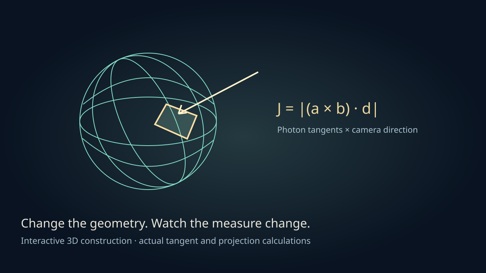
A parameter-area model. The reported inverse factor is not a complete light-transport estimator.
Suspended · activate to run; playback pauses after the full panel leaves the vertical viewport.
Three ways to release path coordinates
Each family retains its own construction, camera query and native local MIS density. Change families without losing their settings.
Planes · u–t, v–t, u–v, arbitrary and MIS
Two released coordinates sweep a sheet. Inspect the crossing, projected measure and the three coordinate-plane strategy weights.
Draws with
Artifact
Export
Purpose
Made with
Demonstrates
Wheel over the scene may zoom; move outside it to scroll the page.

Recorded native image is the cover; the live view is a geometric construction schematic.
Suspended · activate to run; playback pauses after the full panel leaves the vertical viewport.
Time-resolved primitives: a gate becomes a sheet
A finite time gate accepts paths whose arrival lengths lie in an interval. It selects a region with thickness. In the regular zero-width limit, a level set has one dimension less: a volume becomes an arrival-time sheet. Its contribution is a density per unit time or path length, not a nonzero probability at one exact instant.
What survives as the window shrinks? Let F be cumulative arrival probability. The finite contribution is F(τ+Δ/2)−F(τ−Δ/2); dividing by Δ converges to F′(τ). Calling the numerator simply “F” can obscure the difference between a cumulative function, a gate integral, and its normalized density. Here all three are shown explicitly.
Time slicing: volume → finite gate → arrival sheet
Time slicing: volume → finite gate → arrival sheet
The finite window integrates a thick region. Divide by the window width, then approach the instantaneous time density.
Draws with
Artifact
Export
Purpose
Made with
Demonstrates
Wheel over the scene may zoom; move outside it to scroll the page.
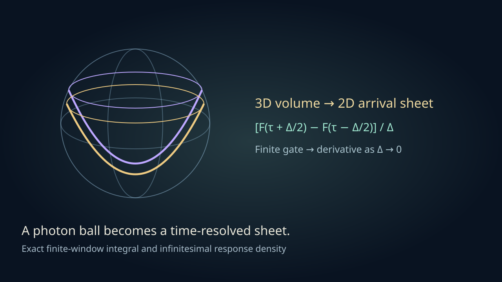
An exactly integrable uniform-ball model with a central source and a far orthographic camera. The projection and derivative are computed, not fitted.
Suspended · activate to run; playback pauses after the full panel leaves the vertical viewport.
For a general arrival function τ(x), the coarea formula converts a volume integral into a surface integral with the factor 1/|∇τ|. This requires a regular level set. Caustics, tangencies and degeneracies still require care; shrinking a temporal kernel does not remove the need for a valid estimator. Transient rendering more broadly can also estimate time densities—this is not exclusive to photon primitives.
Count both legs, or change the time coordinate
A fixed light point L, a scattering point x and a finite camera C give total length ℓ(x)=|x−L|+|C−x|. Holding that sum fixed produces an ellipsoid with the light and camera as its foci. At the shortest possible length it degenerates to the segment between them. In camera-unwarped time, subtract the known camera-side distance at each sample: the remaining light-distance level set is a sphere. This changes which events share a displayed time; it does not shorten a physical light path.
The earlier ball example uses a far orthographic camera and subtracts a common distance. That gives |x|−z, a paraboloid. The new finite-camera construction below makes these three geometries distinguishable.
Count the camera leg. Slice one extra dimension.
Count the camera leg. Slice one extra dimension.
Compare full-path ellipsoids with camera-unwarped spheres, then turn a four-parameter path family into a three-dimensional temporal primitive.
Draws with
Artifact
Export
Purpose
Made with
Demonstrates
Wheel over the scene may zoom; move outside it to scroll the page.
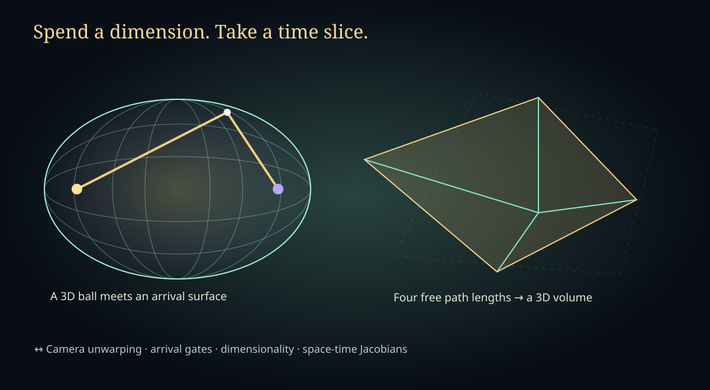
Controlled geometry with explicit time coordinates, support constraints and changes of measure.
Suspended · activate to run; playback pauses after the full panel leaves the vertical viewport.
Spend an extra sweep. Recover a manageable support.
A ball needs a camera-ray interval integral in steady state. A regular instantaneous temporal slice is a 2D sheet again, so a transverse ray meets isolated points. A four-dimensional path family similarly becomes three-dimensional after one independent time constraint. These are dimensions of the sampled path coordinates: a 4D family is not a four-dimensional object sitting in ordinary 3D space.
The construction above starts from four independent segment lengths, each bounded between zero and one. The time condition eliminates one, leaving a 3D polytope: a simplex near zero arrival, then a clipped shape as more interval bounds become active. Mapping it through four fixed segment directions gives a world-space volume when its spatial determinant is nonzero. The time constraint and spatial determinant both enter the density. Extra freedom can improve support, but lower dimension alone does not guarantee cheaper or better-conditioned evaluation. Temporally sliced photon primitives · formulation and reference implementation ↗
Time-Gating Slices Dimensions
In transient rendering, we simulate light transport over time—capturing ultrafast phenomena at femtosecond scales. The key insight: an exact regular arrival-time constraint reduces the support dimension by one; a finite gate retains thickness.
Three free distance coordinates produce a volume; an exact regular time constraint leaves a two-dimensional support.
→ 2D primitives are in general much easier to handle.
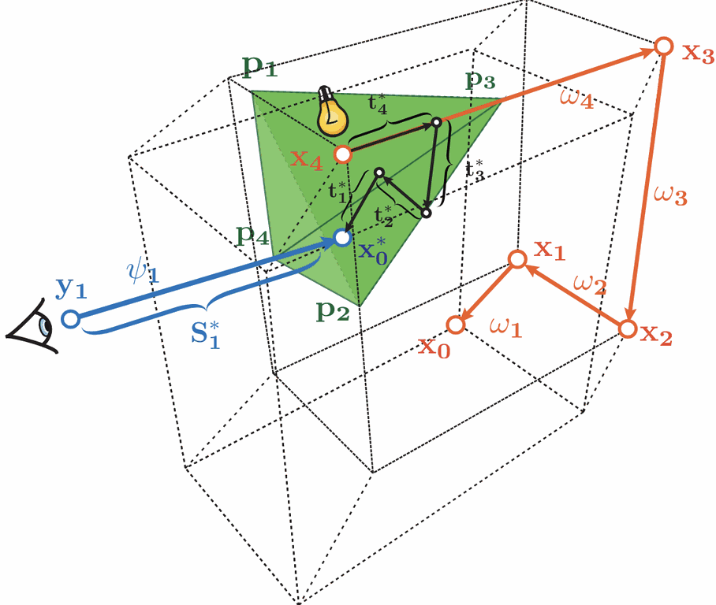
Four distance terms produces a hyper-volume; time gating reduces the dimensionality to three.
→ 4D → 3D turns the computational-wise impractical primitive into one that's much more practical (tested during research).
More Time-Sliced Primitives
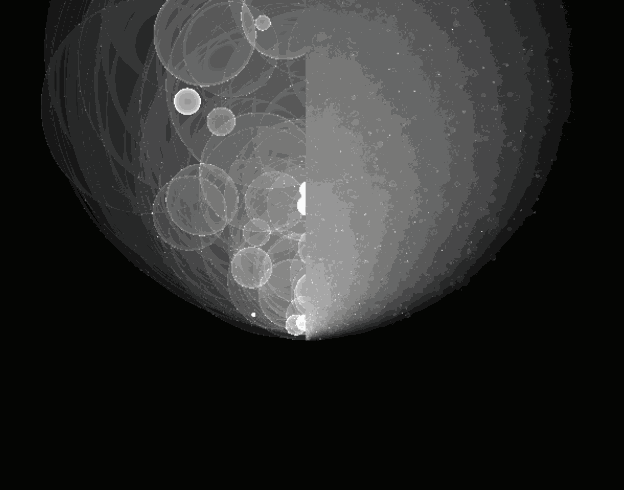
Time-sliced sphere
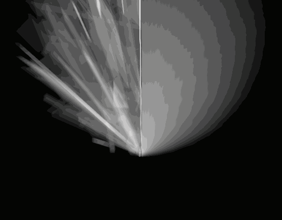
Time-sliced volume
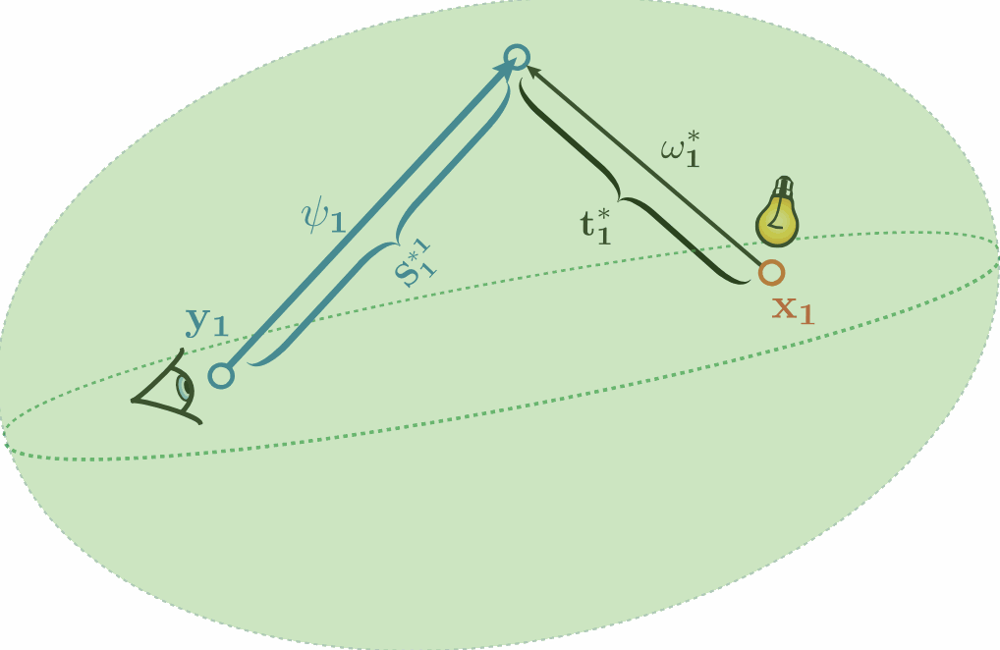
Transient photon ellipsoid
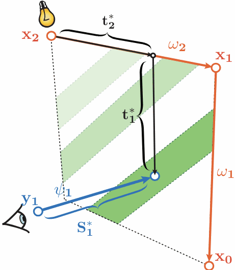
Transient plane
Unpublished research follow-ups
Surface footprints. Signed derivatives. Refractive hourglasses.
Three directions grow out of the same connection framework. Surface primitives move the meeting point onto a receiver; differential primitives turn a moving support into signed boundary sheets. Both have computed construction studies below. The photon hourglass then carries the idea through refraction into a tested, fast native renderer.
A receiver turns a sheet into a footprint curve
Surface intersection gives a useful starting point: two transverse 2D surfaces in 3D meet along a curve. The subtlety is how the camera reaches that curve. A single independent camera hit generally misses it. Sweeping a camera coordinate gives a second footprint; the two curves can then meet at isolated points. The schematic exposes those branches and the triple-product Jacobian. RadianceLab’s surface work provides a reference lighting estimator against which a complete version can be checked.
A derivative can be a lower-dimensional primitive
Keep one sampled emission direction fixed and translate a quad sideways. Its extruded photon volume gains a thin region at one side and loses one at the other. Divide their signed contribution by the displacement and let that displacement vanish: two oppositely signed sheets remain, each swept from an edge of the emitter.
This is a moving-domain derivative. For the homogeneous, unoccluded model below, translation leaves the interior weight unchanged and the boundary term is sufficient. General area-light transport can also change attenuation, visibility and geometry factors; then those interior and boundary derivatives must be included. The viewer compares actual finite differences and the analytic result under the same sensor filter.
Surface footprints: let both subpaths sweep
Surface footprints: let both subpaths sweep
A photon sheet draws a curve on the receiver. Add a camera sheet to expose the isolated crossings and their intersection determinant.
Draws with
Artifact
Export
Purpose
Made with
Demonstrates
Wheel over the scene may zoom; move outside it to scroll the page.
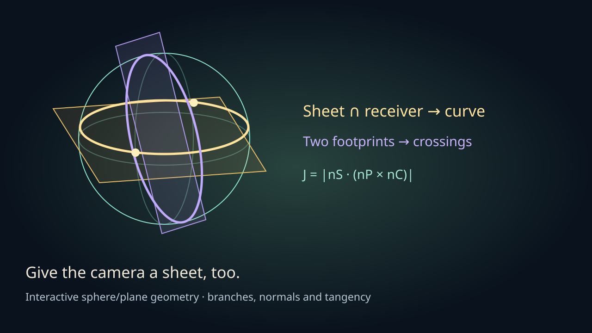
Computed sphere/plane intersections. A geometric research schematic, not a validated general surface-radiance estimator.
Suspended · activate to run; playback pauses after the full panel leaves the vertical viewport.
A moving volume leaves signed boundary sheets
A moving volume leaves signed boundary sheets
Shift a quad while holding one sampled direction fixed. Compare two rendered images divided by their displacement with the analytic boundary derivative.
Draws with
Artifact
Export
Purpose
Made with
Demonstrates
Wheel over the scene may zoom; move outside it to scroll the page.
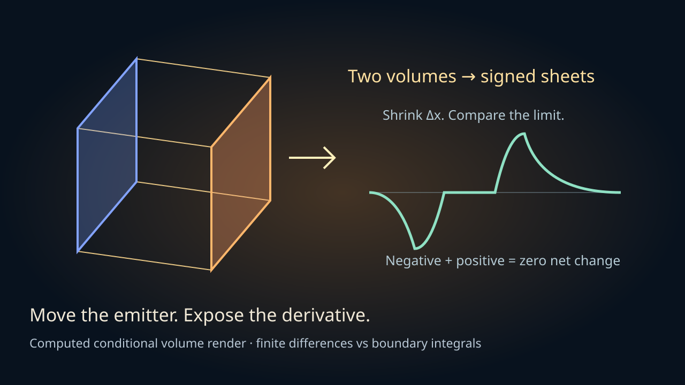
Actual filtered integrals for a controlled single-scattering volume. General light transport also needs interior and visibility derivatives.
Suspended · activate to run; playback pauses after the full panel leaves the vertical viewport.
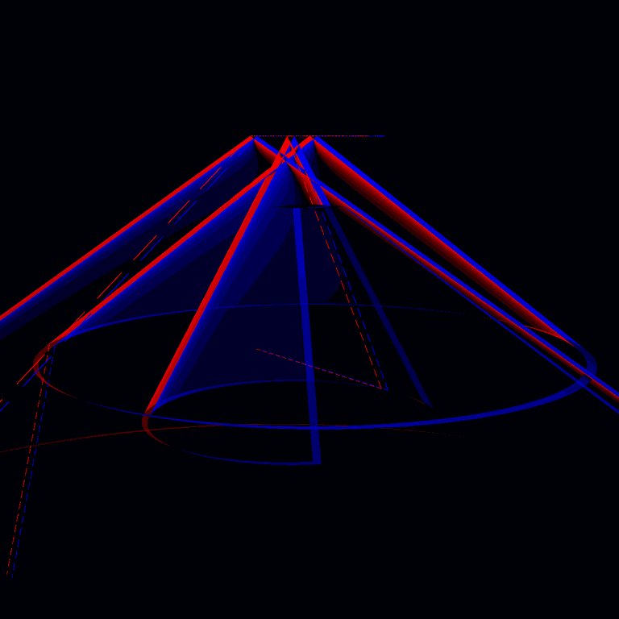

Unpublished research follow-up · implemented in RadianceLab
The photon hourglass: sharp caustics, fast on the CPU
Proven in the renderer—and fast enough to explore interactively. Sweep a complete Snell-refraction path around a glass sphere, then intersect the resulting sheet with the camera ray. A concentrated volumetric caustic becomes a geometric query.
Its density was derived four independent ways, checked against sampled deposits, and tested in the zero-refraction limit, where it reproduces the photon cone to nine digits.
The core construction carries two specular transmissions into one medium-scattering event. Collinear sphere chains preserve the symmetry; an off-axis follower changes the crossing problem.

The native double-chain showcase also records 49.9 passes/s at 605 × 397 for the isolated caustic on the CPU. These are progressive passes: the image improves as samples accumulate. The beam remains competitive at the fold itself with a sufficiently narrow kernel.
Construct the refracted sheet
Construct the refracted sheet
Vary the source and polar seed, trace a multi-sphere chain, then shift a follower off-axis to reveal the loss of a simple rotational sweep.
Draws with
Artifact
Export
Purpose
Made with
Demonstrates
Wheel over the scene may zoom; move outside it to scroll the page.

Actual sphere intersections and Snell refractions are evaluated for each azimuth. The chain toggles add specular interfaces, not random volume bounces. The three-sphere off-axis setting explores geometry beyond the native two-sphere off-axis solver; the wire sheet does not estimate radiance.
Suspended · activate to run; playback pauses after the full panel leaves the vertical viewport.


Estimator support, the grazing guard and the native/schematic boundary
The native tests cover supported refractive constructions. The hourglass component is kernel-free; its grazing guard discards near-tangent crossings. The beam/point mixture retains finite-radius bias and is consistent as the radius shrinks with sufficient samples. The live wire sheet above computes geometry, including a three-sphere off-axis exploration beyond the native solver’s off-axis two-sphere case; native collinear chains are a separate supported extension.
NPR: let the estimator’s structure become the image
The intermediate image is a visual language in its own right. Freeze a small primitive population and its sheets, rings, streaks and refractive horns remain legible. Change the family, reuse pattern or sample budget and the drawing changes with it.
{kind=link}
{kind=link}
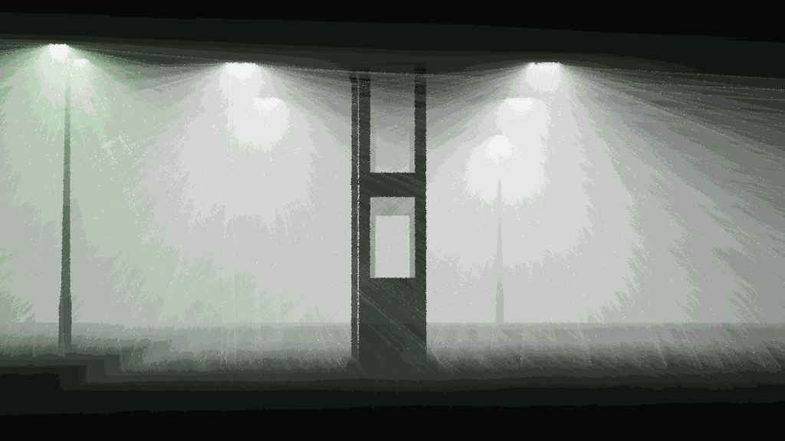
The aesthetic is already visible; a dedicated NPR workflow is the next opportunity. For a converged radiance estimate, accumulate correctly weighted samples. For an illustration, deliberately keep the intermediate structure. Sample reuse changes spatial correlations, so it also changes how noise reads as a pattern.
A research instrument as well as a rendering method
The same visible structures help debug the mathematics: follow a crossing, move the camera toward a tangent, or inspect where a Jacobian becomes small. A proposed estimator can be examined as geometry before its complete transport implementation exists. Temporal slicing, receiver footprints and signed derivatives all use that way of thinking.
For full technical details, see the paper: Photon Surfaces for Robust, Unbiased Volumetric Density Estimation (SIGGRAPH 2019) and the follow-up: Temporally Sliced Photon Primitives for Time-of-Flight Rendering (EGSR 2022)